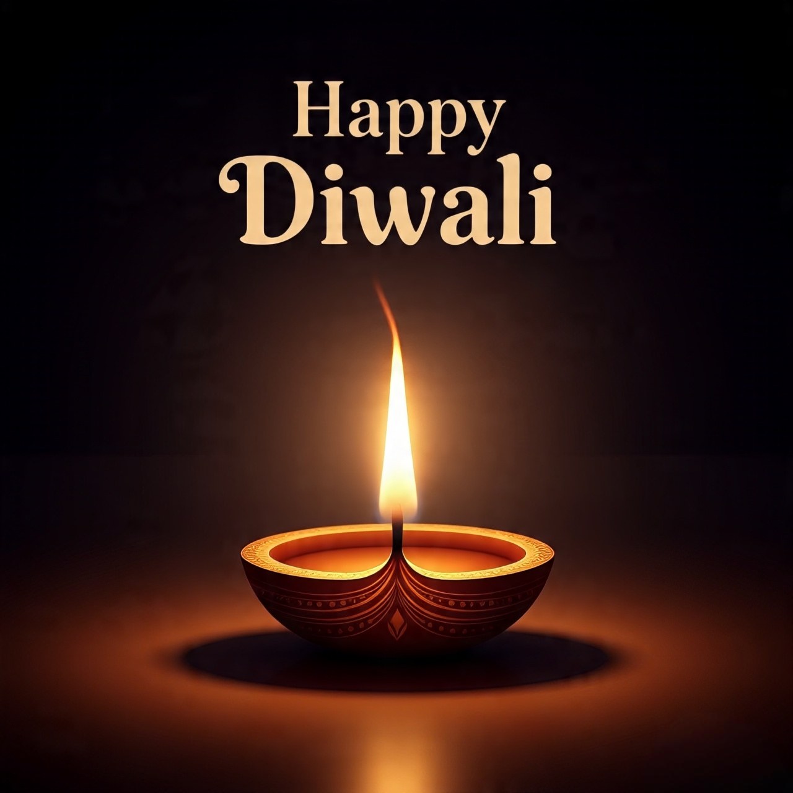

दिवाळी, ज्याला दीपावली असेही संबोधले जाते, हा हिंदू धर्मातील एक प्रमुख सण आहे जो प्रकाशाचा उत्सव म्हणून ओळखला जातो. हा सण अंधारावर प्रकाशाचा, दुष्टावर सत्याचा, अज्ञानावर ज्ञानाचा विजय दर्शवते. हा सण सामान्यतः ऑक्टोबर किंवा नोव्हेंबर महिन्यात साजरा केला जातो आणि पाच ते सहा दिवस चालतो.
दिवाळीचा शब्द संस्कृत भाषेतील 'दीप' (प्रकाश किंवा दिवा) आणि 'आवली' (रांगा किंवा माळ) या शब्दांपासून बनला आहे, ज्याचा अर्थ 'प्रकाशांच्या रांगा' असा होतो. हा सण केवळ हिंदूंसाठीच नव्हे, तर जैन, शीख आणि इतर भारतीय धर्मांच्या अनुयायांसाठीही महत्त्वाचा आहे. जगभरातील देशांमध्ये, जसे की भारत, नेपाळ, मलेशिया, सिंगापूर, फिजी, गुयाना आणि मॉरीशस येथे हा सण उत्साहाने साजरा केला जातो आणि अनेक ठिकाणी तो अधिकृत सुट्टीचा दिवस असतो. दिवाळीचा उत्सव घरगुती स्वच्छता, दिव्यांची सजावट, मंगलमय पूजा, मित्र-परिवारासोबत भोजन आणि सामूहिक आनंद यांचा समावेश असतो. हा सण शरद ऋतूच्या सुरुवातीला येतो आणि तो हवामानातील बदल, पिकांच्या कापणीचा काळ आणि नवीन आर्थिक वर्षाची सुरुवात दर्शवतो.
दिवाळीचा इतिहास अत्यंत प्राचीन आहे आणि तो किमान तीन हजार वर्ष जुना मानला जातो. वेदकालीन काळापासून या सणाची सुरुवात झाली असावी, ज्यात ऋग्वेद आणि इतर ग्रंथांमध्ये प्रकाश आणि समृद्धीच्या प्रतीकांचा उल्लेख आढळतो.
प्राचीन काळात हा सण यक्ष (प्रकृतीचे रक्षक) देवतांचा उत्सव म्हणून साजरा केला जायचा, ज्यात मान्सूननंतरच्या समृद्धीचे कौतुक केले जाई. कालांतराने हा सण रामायण, महाभारत आणि पुराणकथांशी जोडला गेला. पुराणांमध्ये दिवाळीला विष्णू, लक्ष्मी, गणेश आणि इतर देवतांशी जोडलेले प्रसंग सापडतात. मध्ययुगीन काळात भक्तिसाहित्यात, जसे की संत तुकाराम, ज्ञानेश्वर आणि नामदेव यांच्या अभंगांमध्ये दिवाळीचा उल्लेख आढळतो. आधुनिक काळात दिवाळी ही वैश्विक सण बनली असून, संयुक्त राष्ट्रसंघानेही त्याला सांस्कृतिक वारसा म्हणून मान्यता दिली आहे.
हिंदू धर्मात दिवाळीचा मुख्य अर्थ धर्मावर अधर्माचा, प्रकाशावर अंधाराचा विजय असा आहे. हा सण विविध कथा आणि देवतांशी जोडला गेला आहे. सर्वाधिक प्रसिद्ध कथा म्हणजे भगवान रामाची अयोध्येला परतावयाची. रामायणानुसार, राम, सीता आणि लक्ष्मणांनी रावणाचा वध करून चौदा वर्षांच्या वनवासानंतर अयोध्येत परतण्यात यश मिळवले. प्रजेच्या आनंदाने शहरात दिवे लावले गेले, ज्यामुळे हा दिवस 'दीपोत्सव' म्हणून ओळखला गेला.
दुसरी कथा भगवान कृष्णाची आहे, ज्यांनी नरकासुर नावाच्या राक्षसाचा वध करून सतरा हजार कैद महिलांना मुक्त केले. नरकासुराने स्वर्गलोकील मौल्यवान वस्तू चोरून घेतल्या होत्या, आणि कृष्णाने त्याचा पराभव करून न्यायाची पुनर्स्थापना केली. लक्ष्मी पूजेचा संबंध विष्णूची पत्नी लक्ष्मी देवीशी आहे, जी संपत्ती आणि समृद्धीची देवता आहे. गणेश पूजा मात्र अडथळे दूर करण्यासाठी आणि बुद्धीच्या प्रतीक म्हणून केली जाते. पूर्व भारतात ही काली मातेची पूजा म्हणून साजरी होते, ज्यात दुष्ट शक्तींचा नाश दर्शविला जातो. व्यापारी आणि शिल्पकार वर्ग कुबेर (धनाचे रक्षक) आणि विश्वकर्मा (कारागृहाचे देव) यांची पूजा करतात.
जैन धर्मात दिवाळी ही महावीर स्वामींच्या मोक्षदिनाची आठवण करून देते, ज्यात त्यांनी ५२७ ईसापूर्वी निर्वाण प्राप्त केले. शीख धर्मात हा 'बंदी छोड दिवस' म्हणून साजरा होतो, ज्यात गुरू हरगोविंदजींनी मुगल कैदेतून मुक्त होण्याची कथा आहे. नेपाळमधील नववार बौद्ध समुदायात हा तिहार म्हणून लक्ष्मी पूजेसह साजरा केला जातो.
दिवाळी हा पंचदिवसीय उत्सव आहे जो हिंदू चंद्र-सौर वर्षानुसार आश्विन किंवा कार्तिक महिन्यात येतो. अमांत परंपरेनुसार (दक्षिण भारत) तो आश्विन अमावास्येला आणि पूर्णिमांत परंपरेनुसार (उत्तर भारत) कार्तिक कृष्ण पक्षात साजरा होतो. उत्सवाचे दिवस खालीलप्रमाणे आहेत :
दिवाळीच्या उत्सवात अनेक रीतीरिवाजांचा समावेश असतो. घराची स्वच्छता आणि रंगविरंगी रांगोळी काढणे ही प्रथा दुष्ट शक्ती भगवण्यासाठी आहे. दिवे, मेणबत्त्या आणि विद्युत दिव्यांनी घर सजवले जाते. मित्र-नातेवाईकांना गिफ्ट्स आणि मिठाई वाटप केले जाते, ज्यात करंजी, अनारसे, लाडू आणि शरिकंड-पूरी यांचा समावेश असतो. फटाके फोडणे हा आनंदाचा भाग आहे, पण आता पर्यावरणाच्या दृष्टीने मर्यादित केला जातो. बालकांसाठी मातीचे किल्ले बनवणे, आकाशातील फुले उडवणे आणि लोकनृत्य ही मजेदार परंपरा आहेत.
दिवाळी भारताच्या विविध भागांत वेगवेगळ्या रूपांत साजरी होते. महाराष्ट्रात वसुबारसपासून सुरू होऊन भाऊबीजपर्यंत चालते; यात गायी पूजा, फुलबाज आणि ओवाळीचा समावेश असतो. गुजरात आणि उत्तर भारतात हा नववर्षोत्सव आहे, ज्यात बाजारमजुरी आणि मेळावे होतात. बंगालमध्ये काली पूजा आणि मिठाई वाटप महत्त्वाचे आहे. तामिळनाडूत नरकासुराची प्रतिमा जाळली जाते आणि मंदिरांत दिवे लावले जातात. केरळमध्ये अय्यप्पा पूजा आणि केळीपानातील प्रसाद वाटप होते. पंजाबमध्ये शीख समुदाय सोनेरी मंदिरात दिवे लावतात. राजस्थानात लंकेची प्रतिमा जाळली जाते आणि घुडलिया मिरवणुका निघतात. नेपाळमध्ये कुत्रा, गाय आणि बैलांची पूजा होते आणि जुगार खेळणे शुभ मानले जाते. गोव्यात नरकासुर प्रतिमा स्पर्धा आणि दोधी-गूळाची पोळी वाटली जाते. जैन समुदायात फटाके टाळले जातात आणि निर्वाण लाडू ऑफर केले जाते. या विविधतेमुळे दिवाळी ही भारताच्या सांस्कृतिक एकतेतील वैविध्य दर्शवते.
दिवाळी ही आता जागतिक सण आहे. अमेरिकेत कॅलिफोर्निया, कनेक्टिकट आणि पेन्सिल्वेनियात तो अधिकृत सुट्टी आहे. ब्रिटनमध्ये १० डाऊनिंग स्ट्रीटवर दिवाळी दिवा प्रज्वलित केला जातो. ऑस्ट्रेलियात मेलबर्नमध्ये सरकारी फटाके सोहळे होतात. कॅनडा, दक्षिण आफ्रिका आणि ऑस्ट्रेलियातील भारतीय वंशाच्या लोकांमध्ये हा सण उत्साहाने साजरा होतो.